Look n°27
Salle de bain rouge, blanche et dorée, douche italienne
Une salle de bain en marbre blanc réveillée par le rouge et le doré : meuble strié à liserés dorés, douche italienne et LED partout. Voici les articles pour recréer ce look chez vous.
-
Meuble suspendu strié blanc à liserés dorés, avec vasque à poser (80 cm)
Façade striée blanc mat, 2 tiroirs sans poignée, liserés dorés, vasque en céramique incluse. 80 × 47 × 54 cm. Sur l'image, le meuble paraît un peu plus haut qu'en vrai.
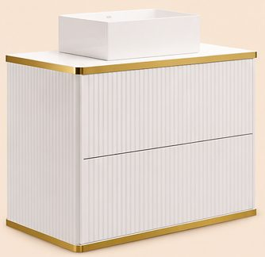
-
Robinet haut or brossé
Mitigeur haut pour vasque à poser, bec orientable à 23 cm.
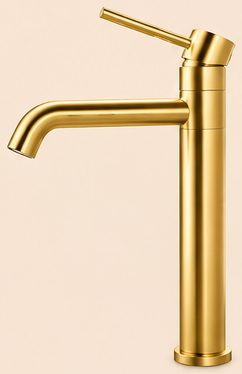
-
Paroi de douche à l'italienne dorée 140 × 200 cm
Verre trempé transparent, profilé mural et barre de stabilisation dorés.
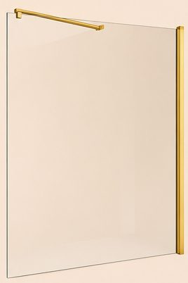
-
Colonne de douche thermostatique or brossé
Grand pommeau de 35 × 22 cm, douchette, tablette-thermostat et petit pistolet. Sur l'image, le thermostat est dessiné plus fin, sans la tablette, et une douchette en plus apparaît sur le mur.
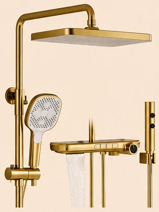
Voir le prix sur AmazonArticle proche de celui de l'image -
Miroir pétale sans cadre 50 × 85 cm
Verre trempé en forme de galet. 50 cm de large, 85 cm de haut. Le halo vient du ruban LED (n° 7) collé derrière.
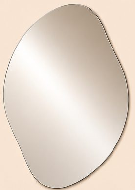
-
Plafonnier carré en cristal
Platine chromée de 20 × 20 cm et cascade de cristaux de 35 cm. Ampoule E27 non fournie.
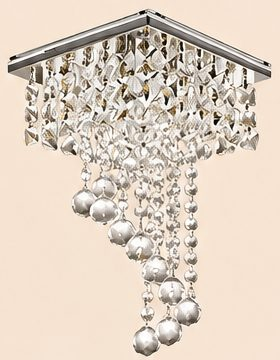
-
Ruban LED COB blanc chaud 5 m
Ligne de lumière continue sans points, 3000 K, variateur et télécommande. Ici derrière le miroir et sous le meuble ; le plafond lumineux fait partie de la pièce.
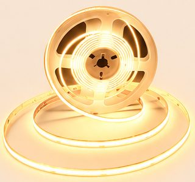
-
Tapis de bain rouge 60 × 180 cm
Microfibre épaisse et absorbante, dessous antidérapant, lavable en machine.
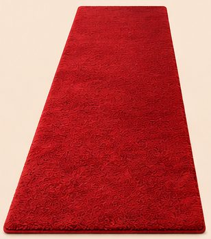
-
Tableau coquelicots rouges 60 × 40 cm
Toile sur châssis prête à accrocher. 60 cm de large, 40 cm de haut.
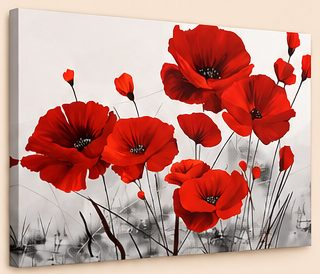
-
Étagères murales flottantes blanches (lot de 3)
Tablettes de 40 cm à fixations invisibles. 5 étagères sur l'image : il faut 2 lots.
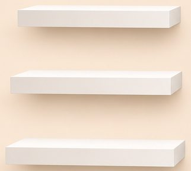
-
Vase doré et fleurs rouges
Vase ovale en céramique dorée de 25 cm. Lot de 12 boules de fleurs rouges, tiges de 28 cm.
-
Serviettes grenat et draps de bain blancs
Éponge de coton : lot de 2 serviettes grenat 50 × 100 cm et lot de 2 draps de bain blancs 90 × 180 cm.
-
Plantes tombantes artificielles (lot de 4)
Pothos, fougère, eucalyptus et collier de perles de 45 à 75 cm, en petits pots noirs.
-
Mini succulentes rouges (lot de 4)
Plantes artificielles dans des pots carrés en céramique blanche.
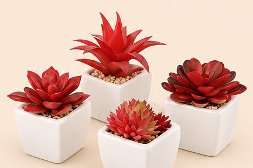
-
Diffuseur à bâtonnets 200 ml
Flacon carré ambré à bague dorée, bâtonnets et fleurs décoratives.
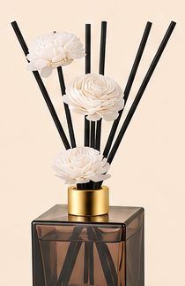
-
Anneau porte-serviettes or brossé
Anneau de 14 cm en acier inoxydable, vendu avec le porte-papier assorti.
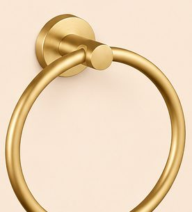
Enregistrer ce look sur Pinterest
Comment naît un lookComment chaque article est choisi, mesuré et vérifiéImage d'inspiration générée par IA. Le prix et la disponibilité de chaque article sont à voir sur Amazon. Liens affiliés : nous touchons une petite commission si vous achetez, sans surcoût pour vous.